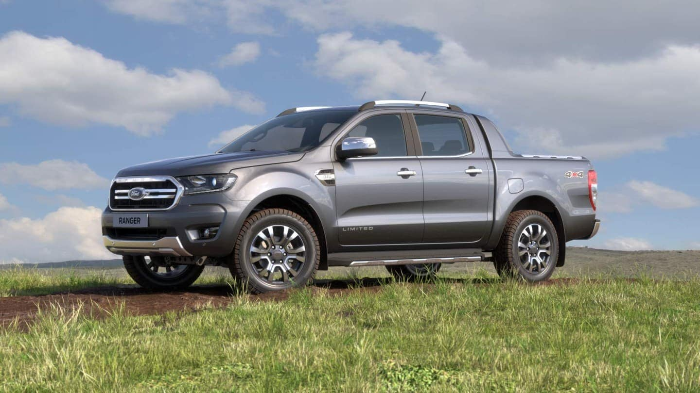

Ford

- Altura da caçamba (mm): 511
- Altura do veículo (mm): 1848
- Altura livre do solo (mm): 232
- Ângulo de ataque (◦): 28
- Ângulo de saída (◦): 26
- Caixa de redução: 2,72:1
- Capacidade de carga (Kg): 1001
- Capacidade de imersão (mm): 800
- Capacidade máxima de reboque com freio (Kg): 2680
- Capacidade máxima de reboque sem freio (Kg): 750
- Combustível: Diesel
- Comprimento da caçamba (mm): 1489
- Comprimento do veículo (mm): 5354
- Diferencial traseiro: Blocante
- Direção: Elétrica
- Distância entre-eixos (mm): 3220
- Freios dianteiros: A Disco
- Freios traseiros: A Tambor com válvula sensível à carga
- Largura da caçamba (mm): 1560
- Largura do veículo com espelhos (mm): 2163
- Largura do veículo sem espelhos (mm): 1860
- Motor: 3.2 Duratorq
- Número de cilindros: 5
- Peso bruto total (Kg): 3270
- Peso do veículo em ordem de marcha (Kg): 2269
- Pneu: 265/60 R18
- Potência (cv): 200
- Roda: Liga Leve 18''
- Suspensão dianteira: Independente com molas helicoidais e barra estabilizadora
- Suspensão traseira: Eixo rígido com feixe de molas longitudinais
- Tanque de combustível (L): 80
- Torque (Nm): 470
- Tração: 4x4 com opção reduzida
- Transmissão Automática: 6 velocidades
- Volume de caçamba (L): 1180